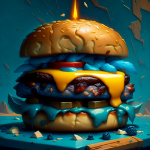

Thor's Thunder Burger

A hearty burger with a juicy beef patty, topped with crispy bacon, melted
cheddar cheese, lettuce, tomato, onion, and a special sauce made with
Sriracha, mayo, and honey.
Ingredients
- 1 pound ground beef
- 4 burger buns
- 4 slices of cheddar cheese
- 8 strips of bacon
- 4 lettuce leaves
- 4 slices of tomato
- 4 slices of onion
- 1/4 cup mayonnaise
- 1 tablespoon Sriracha sauce
- 1 tablespoon honey Salt and pepper to taste Olive oil for cooking
Recipe instructions
- Preheat a grill or a skillet over medium-high heat.
-
In a mixing bowl, combine the ground beef, salt, and pepper. Mix well
and form into four equal-sized patties.
- Lightly brush the patties with olive oil on both sides.
-
Grill or cook the patties on a skillet for about 3-4 minutes on each
side, or until they are cooked through to your liking.
-
While the patties are cooking, fry the bacon in a separate pan until
crispy.
-
In a small bowl, whisk together the mayonnaise, Sriracha sauce, and
honey until smooth. Set aside.
-
Once the patties are cooked, place a slice of cheddar cheese on top of
each patty and let it melt for a minute.
- Toast the burger buns until lightly browned.
-
To assemble the burgers, spread the sauce on the bottom bun, place the
lettuce, tomato, and onion on top, followed by the patty with melted
cheese, two slices of bacon, and the top bun.
- Serve immediately and enjoy your Thor's Thunder Burger!
Home